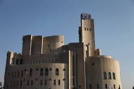
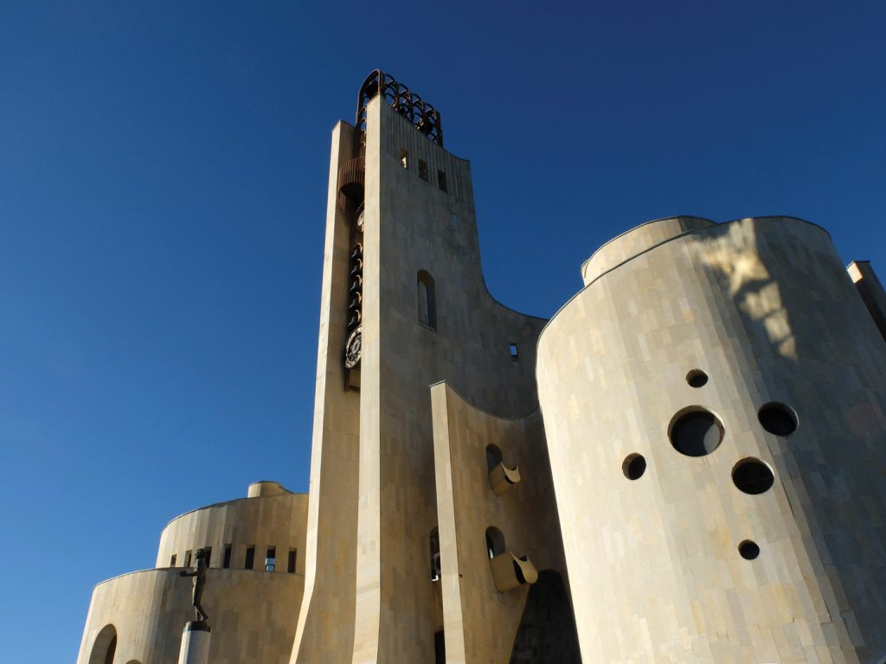

Architects: V. Djorbenadze, V. Orbeladze
Constructor: G. Pitskheluari
Year: 1985
 We can start talking about the palace of rituals and the uniqueness of this building by saying a few words about its architect, Victor Jordenadze, who everyone in Tbilisi knew as merely Butsa. He was born in 1925 and his whole career encompassed most of the 20th century. He died in 1999. Butsa grew up in the city Samtredia where he received special education in music and foreign languages. His mother had the means to hire private tutors and as a result he could freely speak in French, English and etc. His circle of friends included Sergo Parajanov. You could say that the dialogue between these two great personalities has been reflected in their respective works. We should also talk about Butsa’s special interest in Georgian church architecture. He wrote an interesting letter about the Mtskheta’s cross, Bebri’s Castle and Svetitskoveli and carried out a very original research to properly analyze them. This is important to know in order to understand his approach to architecture. This analysis was primarily an architectural experience for him. For example, I remember how much he wrote about apses and even in the main volumes of the palace of rituals we can see the interpretation of the apses. The approach to this building, the walls which carve and create space on themselves, we can see all of these in Butsas’s other work such as the crematory at Mukhatgverdi’s cemetery and another very interesting building is the Ilia Chavchavadze Museum in Kvareli. I guess these three buildings are Butsas’s most expressive creations but all in all, his inclination towards plastic lines is visible in all of his works.